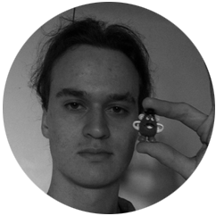

Team Profile
Meet the team behind Adverdapt!
Marcus Kelly
G’day! I’m S3866587 but my mates call me Marcus. I have around 7 years of experience working in various IT roles, and recently decided it was time to return to study to gain a qualification relevant to the industry. My hobbies include coding, guitar, photography, and distance running. I have a keen interest in coding and want to continue to develop and refine my skills so I can continue my pathway towards becoming a frontend developer.
Aiden Johnston
Howdy! I’m Aiden AKA s3875759 I live in lower Victoria I have been working in a warehouse for the last 3 years and I was also studying an IT course through Swinburne in 2018 but I couldn’t finish it because of family issues but shortly after those issues resolved I was excited to once again start studying I am very excited to complete this course and transition into a computer science degree when I have enough credits & experience. I can only speak English but I really want to learn Chinese for the demand and advantages it would give in a business scenario. I can’t think of a personal Fact because I believe I am overwhelmingly average. I thoroughly enjoy riding bikes and I recently bought a nice new Road Bike, so in my very little free time I enjoy riding for fun to enjoy nature and the fresh air.
Andrew Ralph
G’day, My Name is Andrew or s3876928. Currently I am living in Ararat however pushing myself to move back into Ballarat. I have spent most of my time in school trying out different options through things like work experience and similar programs. I spent most of my time in the last two years of high school coaching the next generation of kids how to play sports, alongside this I also studied to be a personal trainer. My work life has consisted of being a press brake operator for nearly 4 years. My hobbies in more recent times have come down to playing video games, skateboarding and as of recently I have gotten into hydro dipping. Although I have no recognisable experience in the IT industry, I have always had a rather extensive interest extending from early childhood.
Benedict Nicholls
Buenos días! I’m Benedict Nicholls AKA s3599963 and I constitute one sixth of the team KABBAM. This is my third attempt settling into a University degree. The partial prior two endeavors included a BA of Applied Science and a BA of Psychology. Having no genuine sense of clarity for an endgame is what lead me to cease committing to study. ‘If one does not know to what port one is sailing, no wind is favorable’ - Seneca. Now bearing a sense of direction, I'm confident in perusing future studies in IT or related sector. I relish photography, sound design, biographies, stoicism and anything else that may fly into my peripheral view of interest. I’ve never professionally worked in the IT industry, but I have dabbled with creating websites (although my website for assignment 1 says otherwise). Ripe IT technologies such as blockchain, IoT and Smart Contracts are areas on my radar that I intend to gain further insight into.
Benjamin Rachinger
Hey there, my name’s Ben and I'm s3880461. I live in Brisbane, Queensland and I enjoy all things Information Technology. I chose studying the Bachelor of IT at RMIT because of the reputation of the University and because RMIT offers online learning at scale. My last three years of my life have been spent backpacking and doing menial labour jobs (like fruit picking and factory work) but before that I had experience working in IT in a consultant position and also as an amateur. I constitute 1/6th of Team KABBAM! We are an elecetic bunch of students and I’m enjoying the group work. My personal hobbies are reading, hiking, gardening and 3D printing. My main focus is learning about cybersecurity and evolving technologies such as machine learning, natural language processing and neural networks.
Kieren Aquilina
 Hello, my name is Kieren Aquilina and my student number is s3873296 I have a background of five years in graphic design and have been building computers for about six years. I wanted a career change and so I have begun my studies to obtain a bachelor's in information technology. I fly FPV drones and use that skill for photography and cinematography. My Instagram is turd_fpv. My interests in IT are new technologies in the industry, networking and security, and to learn as much as I can about programming languages, how things work, how and why things do what they do. Our team’s name is KABBAM. I wish to pursue a career in cyber security and am using this undergraduate qualification to assist me in getting into my first role in IT where I can gain experience and continue studying to reach my ideal job as an ethical hacker or security analyst.
Hello, my name is Kieren Aquilina and my student number is s3873296 I have a background of five years in graphic design and have been building computers for about six years. I wanted a career change and so I have begun my studies to obtain a bachelor's in information technology. I fly FPV drones and use that skill for photography and cinematography. My Instagram is turd_fpv. My interests in IT are new technologies in the industry, networking and security, and to learn as much as I can about programming languages, how things work, how and why things do what they do. Our team’s name is KABBAM. I wish to pursue a career in cyber security and am using this undergraduate qualification to assist me in getting into my first role in IT where I can gain experience and continue studying to reach my ideal job as an ethical hacker or security analyst.
Group Processes
As a group we were glad to capture a HD for our efforts in assignment 2. Marching forward, the common consensus among us all is that we needed to develop a stronger attitude towards being disciplined with setting deadlines for individual tasks, so that we would avoid being ambushed in the final days leading up to the due date. As a solution we’ve decided to incorporate Trello, a digital pin board to assist with organizing individual tasks.
Additionally, we decided to hold some of our group video calls without all members present. We found that even if we picked a date when all team members were available, this could easily change due to work commitments and other life events. To avoid constant rescheduling, we decided to lock in dates for meetings and if anyone was not present we would be able to fill them in afterwards based on the meeting minutes.
Test Results
Marcus Kelly
MBTI: ENFJ-A, Diplomat, Protagonist
Aiden Johnston
MBTI: ENFJ-T, Diplomat, Protagonist
Andrew Ralph
MBTI: INFP-T, Diplomat, Mediator
Benedict Nicholls
MBTI: INTJ-A, Analyst, Architect
Benjamin Rachinger
MBTI: INFJ-A, Diplomat, Advocate
Kieren Aquilina
MBTI: ISFJ-T, Sentinel, Defender
Career Plans
Marcus Kelly
Based on feedback and my own personal reflection after completing assignment 2, I have not had any real change of heart towards my goal of becoming a front-end developer. The main commonalities between my own goal and my peer's goals are essentially that they’re all IT based. While the skill sets and experience requirements may be slightly varied between the group, I believe we would all benefit from staying in contact with each other and maintaining an interest in each other's fields, as there is enough of a basic overlap that any knowledge we can share between each other will probably be beneficial for our own careers.
Another main takeaway from the ongoing discussions I have had with my group members is that whilst all other members require quite an extensive work history or educational background, I could potentially become a successful front-end developer based mostly on my portfolio. This means I could potentially begin to build websites and design elements right now, which I have already began to do upon recommendation from my peers.
Aiden Johnston
After completing and receiving feedback for the previous assignment I have seen how much I need to grow to be able to fill the position I wish to obtain, and I have not changed my stance on my future career if anything it has made me more motivated to obtain and achieve the relevant skills and leadership experience.
I believe with a lot of time and motivation my goal is very achievable it isn’t a short-term goal and my overall drive to a obtain this position hasn’t changed I have just realised the time that it will take to obtain this career will be extensive.
My career plan doesn’t fall entirely in with everyone else’s, but it does coincide with everyone as we are all aiming for IT based industry jobs with common and relative experience between the group.
Andrew Ralph
After all the information I took onboard throughout assignment 2 and feedback, my stand on my ideal job hasn’t changed. I still feel as though for myself it would be the most ideal option. A role in which I can still work with kids and have that interaction however also enabling them to learn a little easier through IT. In saying this however I also have considered that there could be other, well-fitting jobs that do partially speak out to me at the same time.
Having fully recapped on the opportunities presented to me I feel as though I would still prefer to be in a school, working as an “IT Manager”. I still strongly believe that this would give me a more informed appreciation for the work that goes in on the environment.
Benedict Nicholls
After completing and receiving feedback for assignment 2, I realised how niche my original chosen ideal job was. Additionally, since writing the report on blockchain technologies and smart contracts I have been captivated by the ground breaking innovations being developed within the field, leading me to a recalibrated vision of pursuing a career in the domain of smart contracts.
“If you aren’t curious about it, you’ll never be good at it” – Naval Ravikant
My initial plan of completing a Bachelor of Computer Science still remains. The only difference now is that I’ll be spending free time learning how to build smart contracts instead of focusing on flight software. How I plan to construct a Launchpad of knowledge is by getting involved with communities, hackathons, learning new programming languages, asking mountains of questions and making tonnes of mistakes along the way to learn from.
Benjamin Rachinger
Benjamin was unable to comment.
Kieren Aquilina
Following the first assignment I have not changed what I aspire to in my future career. In fact, speaking with the team with what I want to do has made me even hungrier for achieving the level of Cyber Security. To my surprise not many of the team members changed their minds regarding their career goals however, for those that did change their prospective job goals it was more than a slight alteration than a huge change of heart. What is interesting if that across the six of us in the group all our career job goals, we are all vastly different from one another. For example, I am wanting to go into the security and networking sector of IT, Benedict with smart contracts as an emerging sector in IT or Marcus as a Front-end developer. Additionally, I am very confident in my ability to achieve this goal and I do this every day with learning more things about online scams, cyber security podcasts and YouTube videos.